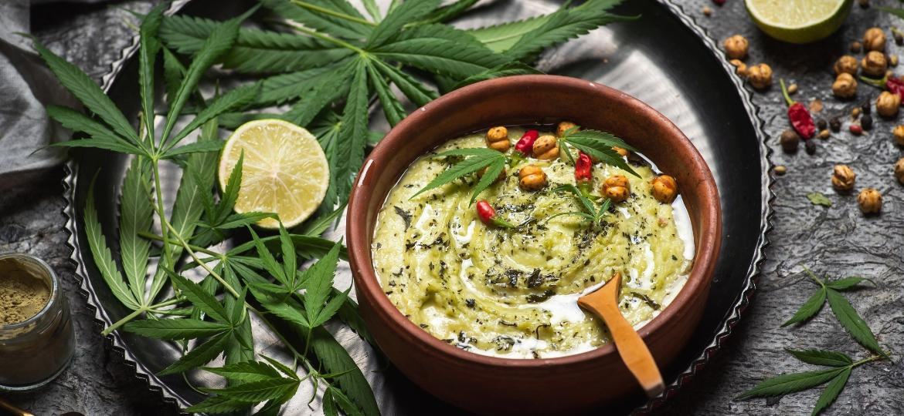

Ingredientes:
- 1 maço de cogumelo
- 1 lsd picado
- 1 beck em rodelas
- 1/2 cebola roxa em tiras
- 1/2 xícara de sementes de cânhamo (para dar aquele “up” na salada)
- Azeite, sal e pimenta a gosto
Modo de Preparo:
1. Lave bem todos os ingredientes.
2. Em uma tigela, misture todos os ingredientes e tempere com azeite, sal e pimenta.
3. Sirva fresca e aproveite essa salada cheia de benefícios!